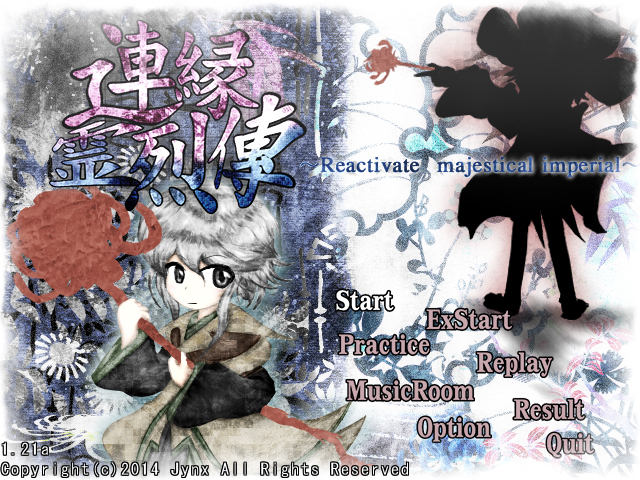

Len'En Reactivate Majestical Imperial ("") - третья игра в серии, вышедшая 2 октября 2014 года.
В игре присутствует 4 сложности: Лёгкая, Нормальная, Сложная, Нереальная. Дополнительный уровень имеет только 3: Лёгкая, Обычная, Абсурдная.
Игроку даётся 3 команды из двух персонажей на выбор, без каких-либо дополнительных условий для открытия.
Игра за каждого из персонажей рассказывает один и тот же сюжет, но с разных точек зрения. Как и в EMS, сюжет повествуется в формате "Выбери своё приключение".
В игре также присутствует секретный персонаж, который открывается при 100% прохождении за первых двух, и был добавлен после выхода 4-ой игры серии.

В Мугенри происходит очередной странный инцидент: зима продолжается уже слишком долго. Главные герои - Ябусамэ Холен и Цубакура Энраку вместе отправляются расследовать это дело. Вторая возможная команда состоит из виновников прошлого инцидента - Сукуне Катано и Адагумо-но-Яорочи, которые посчитали главынх героев слишком ленивыми, и решили отправиться раньше них. Третья комнада - Куроджи Шитодо и Адагумо-но-Сарагимару, которую первая встретила в предыдущей игре на дополнительном уровне.
История секретного играбельного персонажа - Сузуми Кузу - является пересказом сюжета выше, так как он, как подразумевается, "перечитывает" события из прошлого в настоящем, то есть после событий 4-ой части.